السلسلة 98
السيارة (صنف B) · 25 سؤال بالصوت. حاول تجاوب بوحدك، من بعد شوف الجواب.
السؤال 1
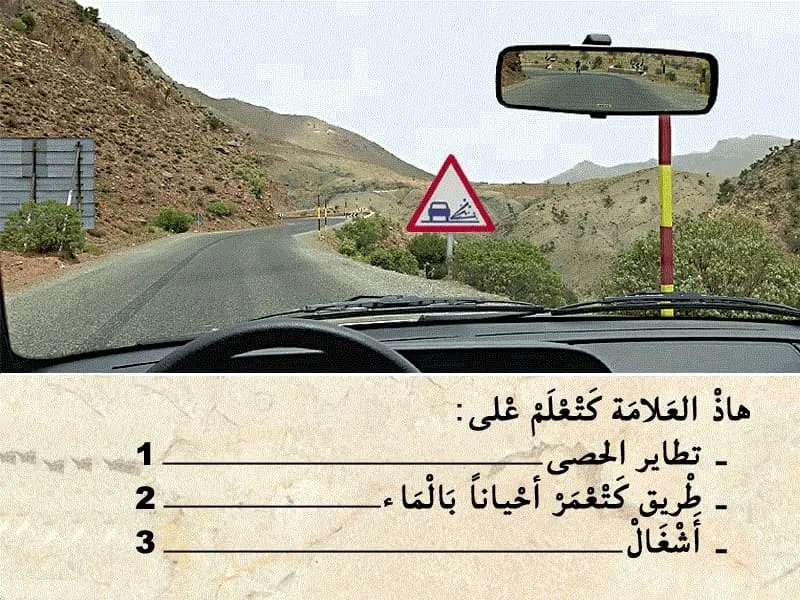
بيّن الجواب
الجواب الصحيح: 1
هذا العلامة . هي علامة ديال الخطر .
- كتعلم على خطر تطاير الحصى. يعني انا الطريق فيها حصى و كاين احتمال يتطاير الا تقابلت معاك شي عربة اخرى.و بالتالي الجواب الصحيح هو رقم 1.
السؤال 2
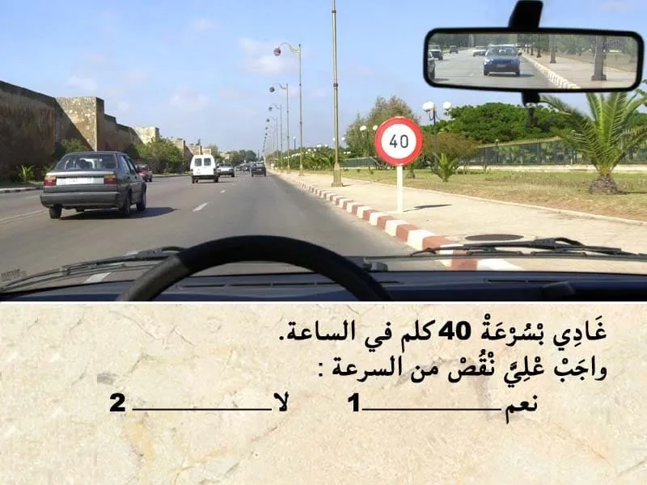
بيّن الجواب
الجواب الصحيح: 2
هذا العلامة ديال المنع. "تحديد السرعة"
كتعلم على انه ممنوع السير بأكثر من 40 كلم في الساعة.
✅ يمكن لي نمشي باي سرعة اقل من 40 كلم في الساعة.
السؤال 3
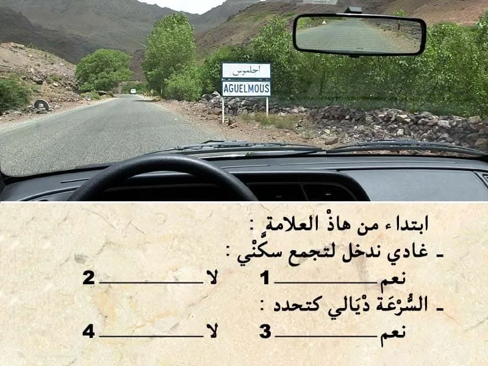
بيّن الجواب
الجواب الصحيح: 1 و 3
هذا العلامة ديال الإرشاد.
كتضم كتابة يعني اسم الوجهة "التجمع السكني " . عدم وجود ارقام لي كتعلم على المسافة لي مزال ليا باش نوصل . كيعني انني غادي ندخل لتجمع سكني.
- داخل التجمع السكني السرعة كتصبح محدودة في 60 كلم في الساعة.
السؤال 4
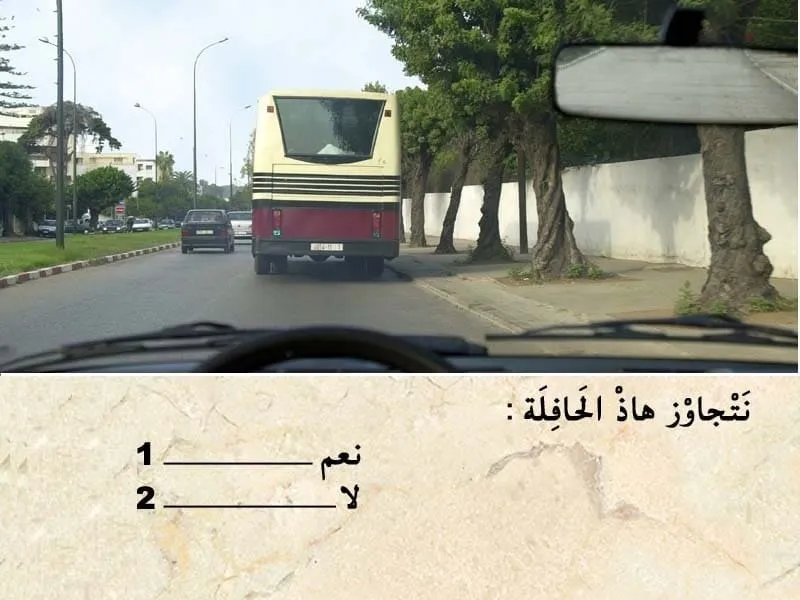
بيّن الجواب
الجواب الصحيح: 1
قبل التجاوز . واجب عليا نراقب، تم نبه، تم ننحاز.
في هذا الحالة الطريق خاوية وراية ما كاينش حتى شي حد جاي وراية و اعلم بلي غادي يتجاوز .
- الطريق قبالتي خاوية " طريق عندو إتجاه وحيد " و بالتالي يمكن لي نتجاوز.
السؤال 5

بيّن الجواب
الجواب الصحيح: 2
باش نتوقف من الواجب تكون العربة ديالي خارج مسلك ديال السير.
فهذا الحالة نص العربة ديالي وسط المسلك. و بالتالي متوقف في مكان غير مناسب.
السؤال 6

بيّن الجواب
الجواب الصحيح: 1
في هذا الحالة الضوء الأصفر رفراف يعني الغاء إشارة الضوء ثلاثي الألوان و بالتالي الأسبقية لمول ليمن . لي ليمن ديالوا خاوي يدوز .
ندوز انا الأول .
السؤال 7
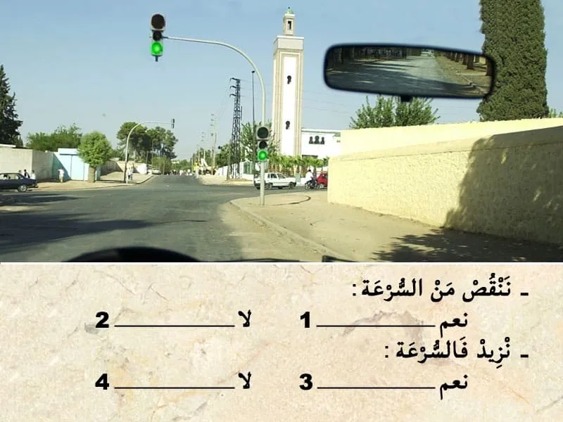
بيّن الجواب
الجواب الصحيح: 1 و 4
في هذا الحالة عندي ملتقى الطرق مع ضوء ثلاثي الألوان . و الضوء الأخضر شاعل .
في هذا الحالة واجب عليا ننقص من السرعة في حالة وجود خطر او الا شعل الضوء الاحمر .
السؤال 8
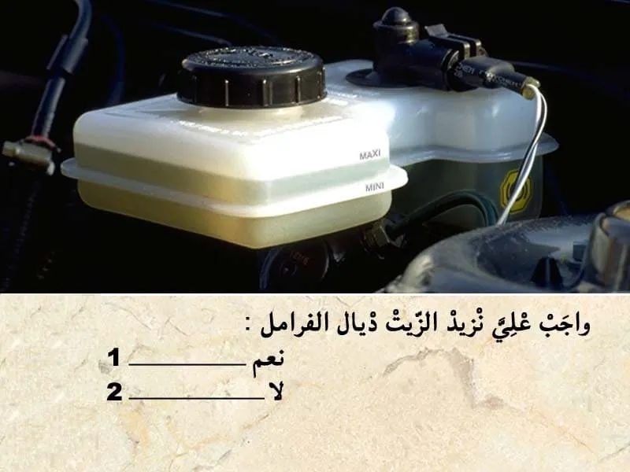
بيّن الجواب
الجواب الصحيح: 2
مستوى زيت الفرامل هذا الخزان بين الحد الأقصى و الحد الأدنى. و قريب من الحد الأقصى.
و بالتالي مضبوط.
و بالتالي ما واجبش عليا نزيد زيت ديال الفرامل.
السؤال 9
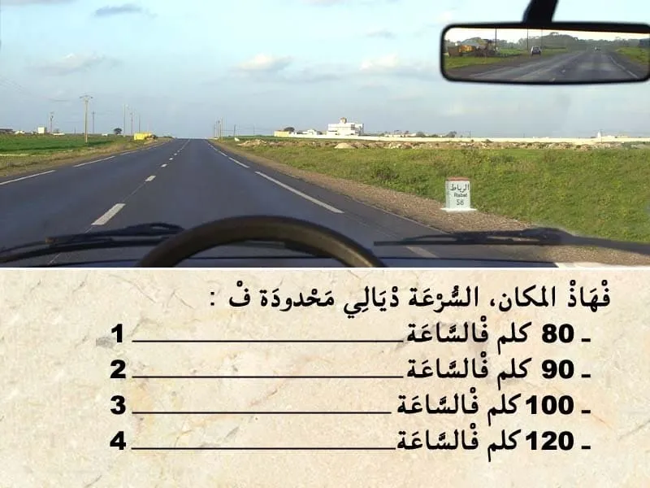
بيّن الجواب
الجواب الصحيح: 3
هذا التشوير الطرقي "الارمة" مصبوغة باللون الأحمر و بالتالي كتعلم على ان الطريق هي طريق وطنية .
وبالتالي السرعة محدودة في 100 كلم في الساعة .
السؤال 10
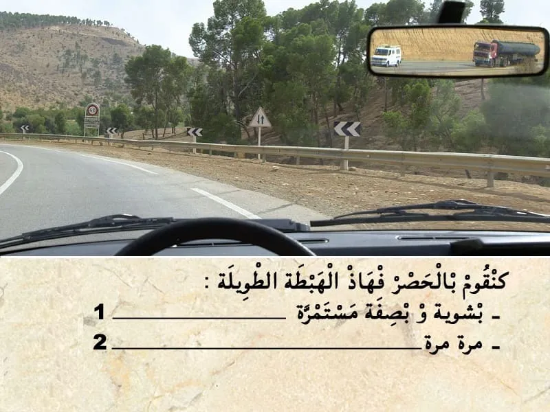
بيّن الجواب
الجواب الصحيح: 2
باش نهبط في هذا المنحذر.
نستعمل الحصار مرة مرة .
و ما يمكنش نستعمل الحصار بصفة متصلة حيت السيارة غادي توقف.
السؤال 11
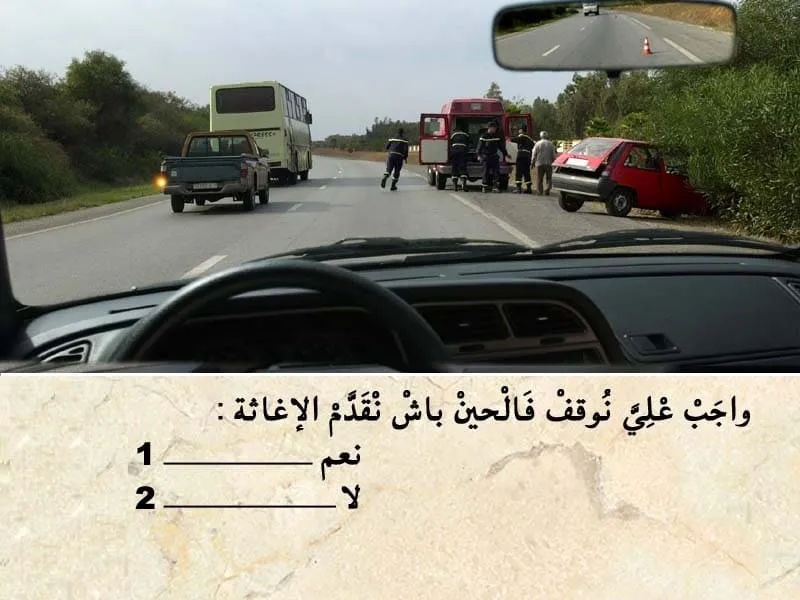
بيّن الجواب
الجواب الصحيح: 2
منين نلقى حادثة و ما تكونش رجال الاسعاف في عين المكان من الواجب عليا نوقف و نقدم الإغاثة بمجرد ما توفر لي الشروط المناسبة .
في هذا الحالة كاين رجال الاسعاف و بالتالي ما واجبش عليا نوقف باش نقدم الإغاثة.
السؤال 12
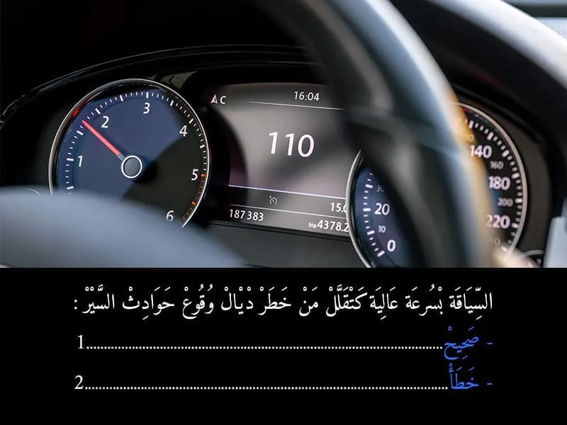
بيّن الجواب
الجواب الصحيح: 2
بالعكس من بين الاسباب الرئيسية لي كتسبب في حوادث السير هي السياقة بسرعة عالية.
السؤال 13

بيّن الجواب
الجواب الصحيح: 2 و 3 و 4
في حالة عدم التوفر على شهادة الفحص التقني بالنسبة للمركبات لي تجاوز العمر ديالها 5 سنين .
كتعتبر مخالفة الدرجة الأولى . فيها غرامة مالية ديال 700 درهم.
- و لا يتم إيداع المركبة في المحجز.و انما يتم الاحتفاظ بيها الى ان يقوم السائق بالادلاء بشهادة تثبث القيام بالفحص التقني.
- و يتم الاحتفاظ بشهادة التسجيل .
- كما يتم خصم 3 ديال النقط.
السؤال 14

بيّن الجواب
الجواب الصحيح: 3
مجموع الأوراق لي من الواجب نتوفر عليها باش نسوق سيارة :
- رخصة السياقة.
- البطاقة الرمادية.
- شهاذة تأمين.
- الضريبة السنوية.
و في حالة تجاوز العمر ديالها 5 سنين. من الواجب التوفر على :
- شهادة الفحص التقني.
في هذا الحالة العمر ديال سيارتي 6 و بالتالي كتنقصني أكثر من ورقة.
" البطاقة الرمادية و شهادة الفحص التقني".
السؤال 15
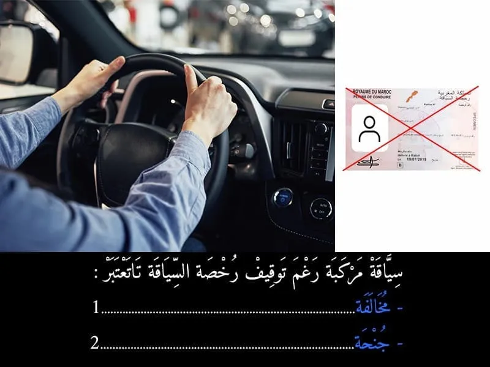
بيّن الجواب
الجواب الصحيح: 2
السياقة مركبة من الواجب على السائق يتوفر على رخصة السياقة سارية الصلاحية.
في حالة ما السائق ما كانش كيتوفر على رخصة السياقة كيتعرض لغرامة و كتعتبر جنحة.
السؤال 16
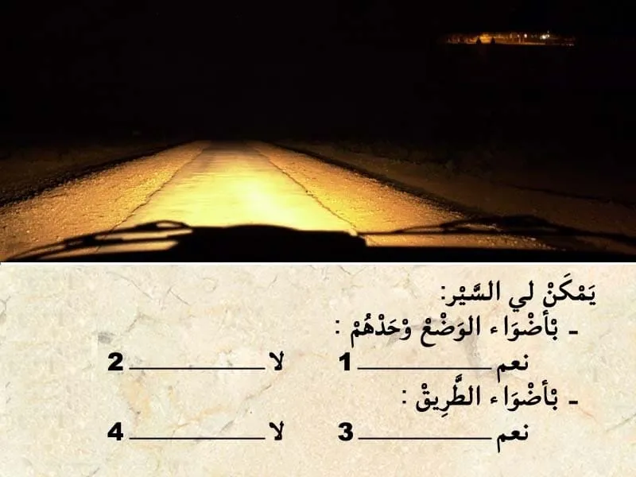
بيّن الجواب
الجواب الصحيح: 2 و 3
في هَذَا الحَالَة انا كنسير خارج التجمع السكني و بالتالي واجب عليا نستعمل أَضْوَاء الطريق .
- ما يمكنش ليا نستعمل أضواء الوضع وحدهم حيت غير كايفيين.
السؤال 17
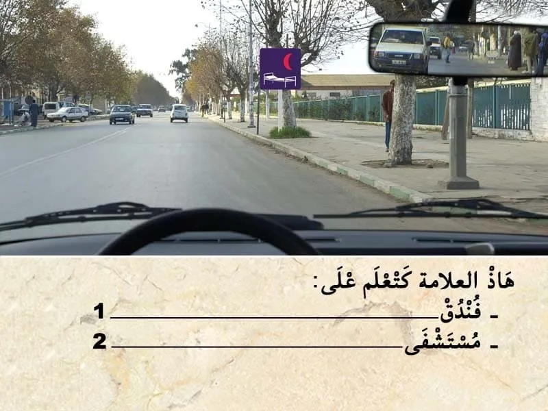
بيّن الجواب
الجواب الصحيح: 2
هذا العلامة ديال الإرشاد.
كتعلم على مستشفى . يجب احترام المكان و عدم القيام بأي فعل لي يسبب في اثارت الضوضاء.
السؤال 18

بيّن الجواب
الجواب الصحيح: 1
✍عند وقوع حادثة سير أدت إلى خسائر مادية، يجب على السائق الحفاظ على الهدوء والحرص على ملء المعاينة الودية بعناية.
لا تعتبر المعاينة الودية إطلاقا اعترافا بالمسؤولية في حال حدوث أضرار بدنية، تقوم مصالح الأمن الوطني أو الدرك الملكي بإنجاز تقرير يرفق بهذا المحضر.
✍تعبر هذه المعاينة عن الأحداث والحقائق وتستخدم من أجل التعويضات اللازمة وهي ضمان لتسوية سريعة للحوادث لذا ينصح بالاحتفاظ بنموذج فارغ منها في المركبة.
✍يجب على السائق إبلاغ مؤمنه "شركة التأمين" عن الحادثة داخل أجل لا يتجاوز 5 أيام.
✅ يتكون محضر المعاينة الودية من العناصر الأساسية التالية:
✔ تاريخ الحادثة. ✔ المكان بالتحديد. ✔ المصابون حتى بإصابات خفيفة. ✔ الأضرار المادية التي تلحق بغير المركبتين أ و ب. ✔ الأضرار المادية التي تلحق بغير المركبتين أ و ب. ✔ الشهود. ✔ المركبة أ / المركبة ب. ✔ المركبة. ✔ المؤمن عليه. ✔ السائق. ✔ توضيح لنقطة الاصطدام الأصلية. ✔ الأضرار الظاهرة. ✔ الرسم التخطيطي. ✔ الملاحظات. ✔ التوقيعات.
السؤال 19
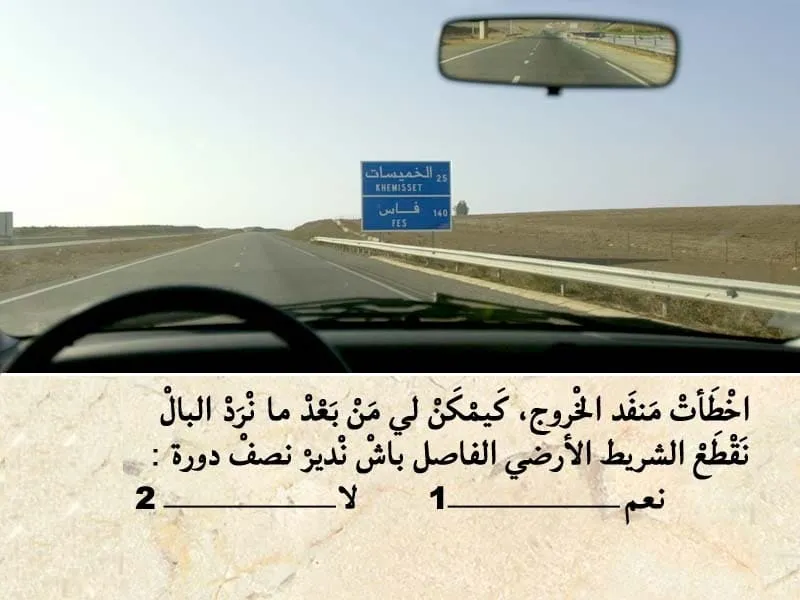
بيّن الجواب
الجواب الصحيح: 2
في حالة أخطاءت منفذ الخروج من الطريق السيار. كيصبح واجب عليك تكمل السير للقدام .حتى توجد مخرج اخر .
في حالة القيام بنصف دورة او الرجوع للخلف او قطع الشريط الفاصل .
تعتبر جنحة و كيتم خصم 3 ديال النقاط من رصيد رخصة السياقة. زائد غرامة مالية .
السؤال 20
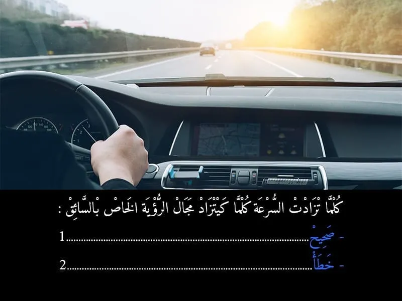
بيّن الجواب
الجواب الصحيح: 2
بالعكس بسرعة عالية كيصبح مجال الرؤية محدود .
-كلما تزادت السرعة كينقص معه مجال الرؤية.
السؤال 21
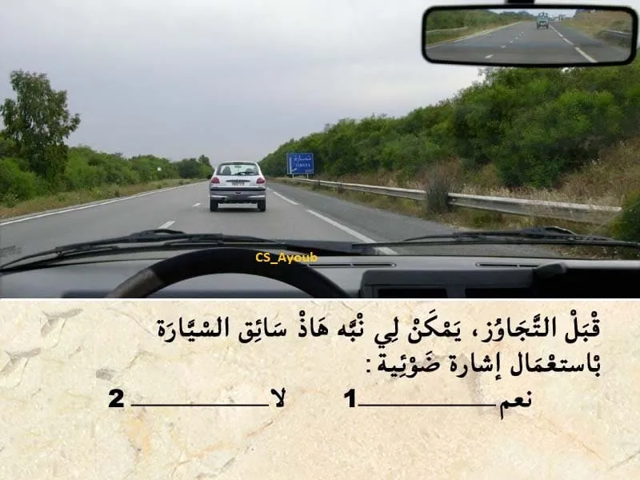
بيّن الجواب
الجواب الصحيح: 1
باش نتجاوز يمكن لي نستعمل اضافة لمؤشر تغير الإتجاه.
نستعمل إشارة ضوئية باضواء الطريق.
السؤال 22
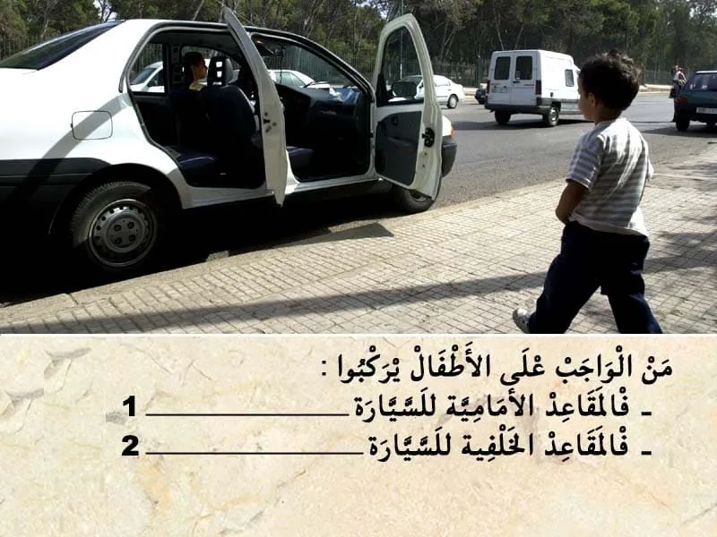
بيّن الجواب
الجواب الصحيح: 2
الأطفال الأقل من 10 سنوات من الواجب يركبوا في المقاعد الخلفية للسيارة .و اركابهم في المقاعد الأمامية كتعتبر مخالفة.
السؤال 23
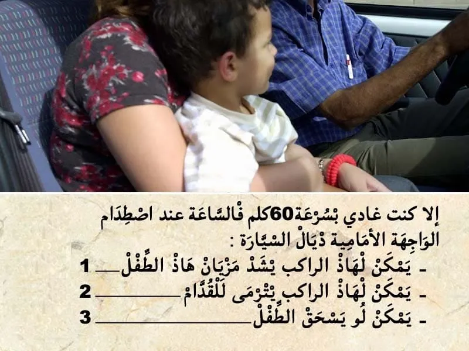
بيّن الجواب
الجواب الصحيح: 2 و 3
هذا الوضعية ممنوعة .
الأطفال من الواجب يركبوا في المقاعد الخلفية للسيارة .
في هذا الحالة هذا الراكبة ما رابطاش حزام السلامة.
و بالتالي في حالة وقوع اصطدام يمكن لهذا الراكب يترمى للقدام.
و يمكن لو يسحق هذا الطفل.
السؤال 24
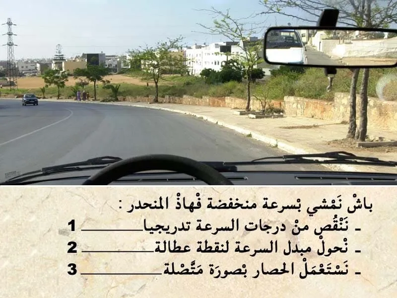
بيّن الجواب
الجواب الصحيح: 1
في هذا المنحدر باش نهبط بسرعة منخفضة ننقص من درجات السرعة تدريجيا .
و ما يمكنش لي نحول مبدل السرعة لنقطة عطالة حيت العربة غدي تزيد في السرعة .
و حالة الا استعملت الحصار بصورة متصلة غادي توقف العربة .
السؤال 25
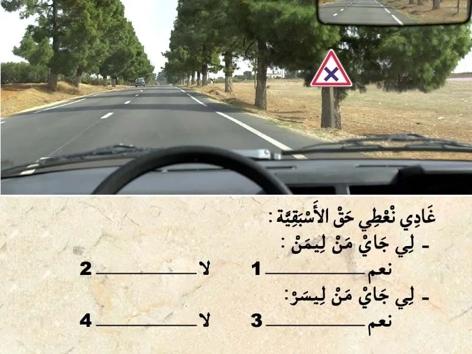
بيّن الجواب
الجواب الصحيح: 1 و 4
هذا العلامة . هي علامة ديال الخطر على بعد 150 متر.
- كتعلم على ملتقى الطرق كروازمة . في هذا الحالة حق الأسبقية للي جاي من ليمن.
و بالتالي الجواب الصحيح هو رقم 1 و 4.
غير للي جاي من ليمن فقط.